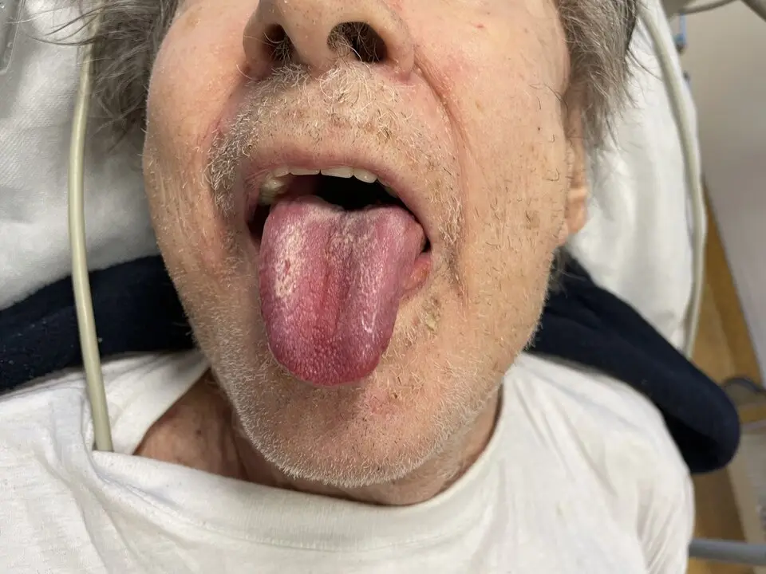

DX.10 — Syndrome hyperosmolaire hyperglycémique
1. Définition et sémantique
Maladies endocriniennes, nutritionnelles et métaboliquesCIM-11, chap. 05Chapitre des maladies des glandes endocrines, du métabolisme et de la nutrition.
- Maladies thyroïdiennesAffections de la glande thyroïde, par excès ou déficit d'hormones.
- ObésitéExcès de masse grasse qui altère la santé.
- Carences nutritionnellesCe sont des états dus à un apport insuffisant en nutriments essentiels.
- Diabète sucréGroupe de maladies définies par une hyperglycémie chronique, par déficit ou résistance à l'insuline.
Diabète sucréCIM-11 ; CIM-10Groupe de maladies définies par une hyperglycémie chronique, par déficit ou résistance à l'insuline.
- Diabète de type 1Il résulte d'une destruction auto-immune des cellules productrices d'insuline1.
- Diabète de type 2Il résulte d'une résistance à l'insuline et d'un déficit relatif de sécrétion1.
- Complications chroniques du diabèteAtteintes des petits et des gros vaisseaux qui s'installent sur des années.
- Complications métaboliques aiguësDécompensations qui menacent la vie en quelques heures ou jours.
Complications métaboliques aiguësCIM-11Décompensations qui menacent la vie en quelques heures ou jours.
- Syndrome hyperosmolaire hyperglycémique
- Acidocétose diabétique reste une complication métabolique aiguë voisine
- Hypoglycémie sévère reste une complication métabolique aiguë voisine
Syndrome hyperosmolaire hyperglycémiqueCIM-11
Le syndrome hyperosmolaire hyperglycémiqueIl s'agit d'une urgence métabolique du diabète de type 2 : hyperglycémie majeure, hyperosmolalité et déshydratation, sans cétose ni acidose significatives2. Ancien nom : coma hyperosmolaire non cétosique. associe quatre éléments2. Une hypovolémie marquée et une glycémie de 30 mmol/L ou plus en sont les deux premiers critères2. Le troisième est une osmolalitéConcentration des particules actives dans le sang, en mOsm/kg ; ici calculée par 2 × Na + glucose + urée. de 320 mOsm/kg ou plus2. Le quatrième est l'absence de cétose et d'acidose franches2.
Il se distingue de l'acidocétose, de l'état mixteAssociation de critères d'acidocétose et de syndrome hyperosmolaire ; elle suit le protocole de l'acidocétose. et de la simple hyperglycémie de stress1,2.
2. Épidémiologie (Suisse, puis Europe)
En Suisse, 6,2 % des personnes de 15 ans et plus déclaraient un diabète ou son traitement en 20223. Les groupes à risque sont les personnes âgées, institutionnalisées, dont la soif est atténuée et l'accès à l'eau limité1. Les enjeux sont la mortalité hospitalière de 5 % des patients atteints du syndrome, contre 3 % pour l'acidocétose (série américaine1).
| Donnée internationale | Part des patients (%) | Lecture |
|---|---|---|
| Part des crises hyperglycémiques, États-Unis | 38 % acidocétose ; 35 % syndrome hyperosmolaire ; 27 % état mixte1 | Le syndrome est aussi fréquent que l'acidocétose |
| Âge et type de diabète | 47,5 % ont 45 à 64 ans ; 88,1 % sont en type 21 | Adulte d'âge moyen ou âgé, type 21 |
| Mortalité hospitalière | 5 % (syndrome), 3 % (acidocétose), 8 % (état mixte)1 | Le pronostic est plus sombre que celui de l'acidocétose |
| Mortalité à 30 jours, étude italienne1 | 16 % après un syndrome hyperosmolaire1 | La mortalité reste lourde après la sortie |
| Séries britanniques | 15 à 20 %1 | Mortalité élevée selon l'âge et les comorbidités |
| Déclencheur infectieux | 30 à 60 % des cas1 | Infection urinaire et pneumonie en tête |
3. Physiopathologie
La cause est un déficit partiel en insuline. Il suffit à bloquer la cétogenèse, mais pas à contrôler la glycémie1,2. Du moléculaire au clinique, la cascade suit quatre temps.
- Amorce. Une infection, un infarctus ou un AVC augmentent la glycémie de façon durable2. Un corticoïdeMédicament qui s'oppose à l'insuline ; les thiazidiques, les sympathomimétiques et les antipsychotiques agissent de même. produit le même effet2.
- Développement. Au niveau moléculaire, la production hépatique de glucose augmente et la captation périphérique baisse. Au niveau cellulaire, le glucose en excès sort dans l'urine et entraîne l'eau : c'est la diurèse osmotiquePerte d'eau et de sels dans l'urine, entraînée par le glucose non réabsorbé..
- Installation. Au niveau tissulaire, l'organisme élimine plus d'eau que de sodium. L'osmolalité monte, les cellules se déshydratent, le volume circulant baisse et le rein filtre moins1.
- Maintien. La baisse de filtration réduit l'élimination du glucose : la glycémie grimpe encore. La soif atténuée du sujet âgé et l'accès limité à l'eau aggravent la déshydratation sur des jours ou des semaines1,2.
Au niveau clinique, le patient devient confus, déshydraté, parfois comateux. L'osmolalité au-dessus de 330 mOsm/kg altère nettement la cognition2. Le sodium mesuré peut sembler normal ou bas : le glucose attire l'eau et dilue le sodium. Il baisse de 2,4 mmol/L pour chaque excès de glucose de 5,5 mmol/L2.
Ces mécanismes expliquent les complications. Une correction trop rapide de l'osmolalité provoque deux complications1,2. L'une est un œdème cérébralGonflement du cerveau par entrée d'eau.1,2. L'autre est une démyélinisation osmotiqueLésion de la myéline du tronc cérébral après une correction trop rapide de la natrémie ; ancien nom : myélinolyse centropontine.1,2. La déshydratation et l'état prothrombotique favorisent les thromboses artérielles et veineuses.
| Lésion ou perturbation | Exploration qui la montre | Thérapeutique et mécanisme |
|---|---|---|
| Hypovolémie | Pouls, tension, urée, créatinine, diurèse | Chlorure de sodium 0,9 % BaxterDCI : chlorure de sodium en solution isotonique (n° 41181) Classe : soluté de remplissage isotonique (ATC B05BB01) Groupe : solutions pour perfusion intraveineuse (ATC B05B)1. Chefs de file :
|
| Hyperosmolalité | Osmolalité calculée, ≥ 320 mOsm/kg1 | Remplissage lent : baisse de 3,0 à 8,0 mOsm/kg/h pour protéger le cerveau2 |
| Hyperglycémie | Glycémie ≥ 30 mmol/L2 | Le remplissage seul la baisse ; Actrapid HMDCI : insuline humaine (Actrapid HM, n° 44610) Classe : insuline à action rapide (ATC A10AB01) Groupe : insulines et analogues (ATC A10A). Chefs de file :
|
| Déficit potassique | Kaliémie à l'admission, puis toutes les heures ou 4 h2 | Kaliumchlorid 7,45 % B. Classe : électrolyte, apport potassique (ATC B05XA01) Groupe : additifs électrolytiques (ATC B05X). Chefs de file :
|
| État prothrombotique | Clinique ; imagerie si suspicion | Clexane®DCI : énoxaparine (Clexane®, n° 49456) Classe : héparine de bas poids moléculaire (ATC B01AB05) Groupe : antithrombotiques (ATC B01). Chefs de file :
|
| Hypoglycémie secondaire | Glycémie capillaire horaire | Glucose 5 % B. Classe : soluté d'hydrates de carbone (ATC B05BA03) Groupe : solutions pour perfusion intraveineuse (ATC B05B). Chefs de file :
|
4. Démarche diagnostique
On ne pose jamais le diagnostic sur les seuls chiffres biologiques. Le médecin exclut d'abord les drapeaux rouges, puis applique les étapes.
Étape 1. Les drapeaux rouges (🚩) signalent une menace vitale.
| Drapeau | Signe ou examen qui tranche | Piège | Diagnostic associé et conduite |
|---|---|---|---|
| 🚩 Stupeur ou comaRouge : les troubles de conscience dominent quand l'osmolalité dépasse 330 mOsm/kg ; ils signent un cas sévère à traiter en soins intensifs2. | Glasgow, osmolalité, scanner cérébral si déficit focal | Attribuer la confusion à la démence | Syndrome sévère ou AVC : soins intensifs, avis senior |
| 🚩 Choc, pouls > 100/min, systolique < 100 mmHgRouge : hypovolémie sévère ; le remplissage prime sur l'insuline2. | Tension, lactate, créatinine | Donner l'insuline en premier : elle fait chuter le volume intravasculaire | Remplissage immédiat ; chercher un sepsis |
| 🚩 Cétonémie > 3,0 mmol/L ou pH < 7,3Rouge : c'est un état mixte ; le patient suit le protocole de l'acidocétose avec l'insuline à 0,1 U/kg/h2. | BHB capillaire, gaz du sang | Traiter un état mixte comme un syndrome pur | Protocole de l'acidocétose2 |
| 🚩 Kaliémie ≥ 6,0 ou < 3,5 mmol/LRouge : arythmie ; la kaliémie guide le potassium et impose un avis senior2. | Kaliémie, ECG | Perfuser du potassium sans mesure préalable | Palier de potassium du tableau 11.B.12 |
| 🚩 Douleur thoracique ou déficit neurologiqueRouge : infarctus et AVC sont des déclencheurs fréquents. | ECG, troponine, imagerie cérébrale | Attribuer ces signes à l'hyperosmolalité | Prise en charge de l'événement vasculaire |
| 🚩 Fièvre, toux, dysurieRouge : l'infection déclenche 30 à 60 % des cas2. | Hémocultures, radiographie du thorax, urines | Oublier la fièvre absente chez le sujet âgé | Antibiotiques ciblés |
| 🚩 Diurèse < 0,5 mL/kg/hRouge : insuffisance rénale aiguë, fréquente dans le syndrome. | Créatinine, diurèse horaire | Réduire le remplissage par crainte de surcharge | Remplissage guidé par la clinique |
Un seul critère suivant impose de discuter les soins intermédiaires : osmolalité > 350 mOsm/kg, sodium > 160 mmol/L, pH < 7,1, kaliémie < 3,5 ou ≥ 6 mmol/L, Glasgow < 12, saturation en oxygène < 92 % à l'air, systolique < 90 mmHg, pouls > 100 ou < 60/min, diurèse < 0,5 mL/kg/h, créatinine > 200 µmol/L, hypothermie, événement macrovasculaire2.
Étape 2. Sans urgence immédiate, cinq étapes mènent au diagnostic.
- Le médecin mesure la glycémie, le BHB, le gaz veineux et l'ionogramme.
- Il calcule l'osmolalité par 2 × Na + glucose + urée2.
- Il vérifie les critères : hypovolémie, glycémie ≥ 30 mmol/L, osmolalité ≥ 320 mOsm/kg, BHB ≤ 3,0 mmol/L, pH > 7,32.
- Il écarte l'état mixte et l'acidocétose.
- Il cherche le déclencheur : infection, événement vasculaire, médicament, arrêt du traitement.
| Diagnostic dangereux à écarter | Signe ou examen qui tranche | Piège |
|---|---|---|
| Acidocétose | BHB ≥ 3,0 mmol/L, pH < 7,32 | Un tiers des crises sont mixtes1 |
| Hyperglycémie de stress | Osmolalité < 320 mOsm/kg, pas d'hypovolémie1 | Valeur seule de la glycémie trompeuse |
| Sepsis ou AVC isolé | Cultures, imagerie, glycémie modérée | Ils peuvent aussi déclencher le syndrome |
| Diabète insipide | Hypernatrémie vraie, glycémie normale | Confondre soif et polyurie de deux origines |
| Hypercalcémie maligne | Calcémie élevée, glycémie normale | Elle déshydrate aussi et confond |
5. Anamnèse ciblée et drapeaux rouges
Chaque question cherche la cause de la déshydratation ou du déficit en insuline.
| Question clé | Raison physiopathologique | Conduite |
|---|---|---|
| Depuis combien de jours soif, polyurie, somnolence ? | La déshydratationPerte d'eau supérieure à celle du sodium ; elle s'installe sur des jours à des semaines. s'installe sur des jours à des semaines, l'acidocétose en heures1 | Orienter vers le syndrome |
| Quel diabète, quel traitement, quelles prises oubliées ? | L'arrêt du traitement provoque la décompensationPerte de contrôle de la glycémie malgré le traitement.2 | Reprendre ou adapter le traitement |
| Le patient boit-il seul ? Vit-il en institution ? | La soif atténuée et l'accès limité à l'eau creusent le déficit | Surveiller l'hydratation |
| Fièvre, toux, brûlures urinaires ? | L'infection élève les hormones de contre-régulationCortisol, adrénaline et glucagon : ils s'opposent à l'insuline. (30 à 60 % des cas)2 | Cultures et antibiotiques |
| Douleur thoracique, déficit neurologique, douleur abdominale ? | Infarctus, AVC et pancréatite déclenchent la crise2 | ECG, imagerie, lipase |
| Corticoïdes, diurétiques thiazidiques, antipsychotiques, sympathomimétiques ? | Ils élèvent la glycémieConcentration de glucose dans le sang ; les corticoïdes et les sympathomimétiques l'élèvent par résistance à l'insuline. ou aggravent les pertes hydriques | Revoir la liste des médicaments |
| Diurétiques ? Vomissements, diarrhée ? | Ils aggravent l'hypokaliémiePotassium sanguin bas ; l'insuline le fait encore baisser en le poussant dans les cellules. et la déshydratation | Potassium à contrôler avant l'insuline |
| Fonction cognitive de base ? | Elle sert de référence : la récupération cognitiveRetour à l'état mental d'avant la maladie ; critère de résolution. marque la guérison | Documenter l'état antérieur |
Cinq drapeaux rouges imposent une action immédiate, car ils annoncent un cas sévère ou un déclencheur vital2.
| Drapeau rouge | Signification | Action immédiate |
|---|---|---|
| 🚩 Coma ou choc | Osmolalité supérieure à 330 mOsm/kg, hypovolémie sévère : le cas est sévère2 | Urgence vitale, soins intensifs et remplissage immédiat2 |
| 🚩 Déficit neurologique | Œdème cérébral, AVC ou convulsions : l'hyperosmolalité atteint le cerveau2 | Imagerie cérébrale2 |
| 🚩 Cétonémie supérieure à 3,0 mmol/L | État mixte ou acidocétose : le déficit en insuline est plus profond2 | Protocole de l'acidocétose2 |
| 🚩 Kaliémie ≥ 6,0 ou < 3,5 mmol/L | Risque rythmique ; l'insuline pousse le potassium dans les cellules et aggrave l'hypokaliémie2 | Avis spécialisé (diabétologue, intensiviste) avant l'insuline2 |
| 🚩 Douleur thoracique | Infarctus déclencheur ou conséquence2 | ECG et troponine2 |
6. Examen physique ciblé, région par région
L'examen décrit le normal avant le pathologique. Les sources lues ne donnent pas de sensibilité chiffrée : la valeur est qualitative.
| Région | Normal attendu | Pathologique | Signes à rechercher (clic : technique, valeur, piège) |
|---|---|---|---|
| Signes vitaux | Pouls < 100/min, systolique ≥ 100 mmHg, afébrile2 | Tachycardie, hypotension, fièvre | Pouls et tensionTechnique : pouls compté 30 secondes, tension couchée puis debout après 1 à 3 minutes2. Valeur : pouls > 100/min ou systolique < 100 mmHg signent l'hypovolémie sévère2. Piège : un bêta-bloquant masque la tachycardie. |
| Yeux, langue, force | Yeux non enfoncés, langue humide sans sillons, force normale | Yeux enfoncés, sillons longitudinaux de la langue, faiblesse des extrémités | Signes de déshydratationTechnique : regarder les yeux, inspecter la langue, tester la force des mains et des pieds. Valeur : l'association corrèle avec une urée élevée. Piège : le pli cutané est peu fiable chez le sujet âgé. |
| Hydratation veineuse | Veines jugulaires visibles à 45°2 | Veines jugulaires plates | Veines jugulairesTechnique : patient à 45°, observer le remplissage de la veine du cou2. Valeur : des veines plates confirment l'hypovolémie. Piège : une insuffisance cardiaque modifie la lecture. |
| Neurologie | Éveillé, orienté, pupilles symétriques, Glasgow 152 | Confusion, somnolence, déficit focal, convulsions | Score de Glasgow et déficit focalTechnique : yeux, parole, motricité, total sur 15 ; force et parole de chaque côté2. Valeur : confusion fréquente au-dessus de 330 mOsm/kg2. Piège : un AVC ou une hypoglycémie imitent un déficit. |
| Cœur et poumons | Rythme régulier, murmure vésiculaire normal | Arythmie, souffle, râles | Auscultation cardio-pulmonaireTechnique : quatre foyers cardiaques et bases pulmonaires. Valeur : pneumonie ou insuffisance cardiaque déclenchante. Piège : le remplissage peut décompenser un cœur fragile. |
| Abdomen | Souple, indolore | Défense, douleur localisée | Palpation abdominaleTechnique : paume à plat, quadrant par quadrant. Valeur : pancréatite ou ischémie déclenchante. Piège : la douleur est atténuée chez le sujet âgé. |
| Pieds et peau | Peau intacte, talons indemnes | Escarre, ulcère, plaie | Inspection des piedsTechnique : examiner talons, espaces interdigitaux et plante à l'admission et chaque jour. Valeur : le syndrome expose aux ulcères de pression2. Piège : le patient neuropathe ne ressent pas la douleur. |
Langue sèche chez un patient déshydraté. Photographie clinique, bouche ouverte, langue tirée, vue de face

Ce cliché montre le signe de la langue sèche : le lecteur le cherche d'abord seul.
La copie annotée (langue sèche chez un patient déshydraté) numérote les repères décrits ci-dessous.
- ① Surface linguale sèche, rouge foncé, avec un enduit blanc : la salive manque
- ② Langue tirée devant les dents : on juge sa surface et sa trophicité
- Un patient respirant par la bouche ou sous oxygène a aussi la langue sèche
- Seule l'association avec les yeux enfoncés, la faiblesse et la clinique oriente vers l'hypovolémie
Ce que l'image décide. Une langue sèche avec des signes d'hypovolémie impose la glycémie, l'osmolalité calculée, puis le remplissage par sérum physiologique avant l'insuline
7. Approche syndromique
Quatre syndromes composent le tableau. Chacun sépare les signes fonctionnels des signes physiques.
7.1 Syndrome hyperglycémique
| Type | Signe (clic : définition) | Recherche (geste) | Mécanisme |
|---|---|---|---|
| Fonctionnel | PolyurieUrines abondantes. Mécanisme : Le glucose non réabsorbé entraîne l'eau. | Demander la diurèse des dernières 24 heures2 | Le glucose non réabsorbé entraîne l'eau |
| Fonctionnel | Polydipsie parfois absenteSoif absente ou faible malgré la déshydratation. Mécanisme : La soif s'atténue avec l'âge. | Interroger la prise de boissons | La soif s'atténue avec l'âge |
| Physique | GlycosurieGlucose dans l'urine. Mécanisme : Le seuil rénal du glucose est dépassé. | Bandelette urinaire positive | Le seuil rénal du glucose est dépassé |
| Biologique | Glycémie ≥ 30 mmol/LHyperglycémie majeure2. Mécanisme : Production hépatique accrue, captation baissée. | Glycémie capillaire puis veineuse | Production hépatique accrue, captation baissée |
7.2 Syndrome de déshydratation hypovolémique2
| Type | Signe (clic : définition) | Recherche (geste) | Mécanisme |
|---|---|---|---|
| Fonctionnel | Vertiges, faiblesseMalaise au lever. Mécanisme : Baisse du volume circulant. | Interroger sur la station debout | Baisse du volume circulant |
| Physique | Tachycardie, hypotensionPouls > 100/min, systolique < 100 mmHg2. Mécanisme : Hypovolémie sévère. | Mesures couché puis debout | Hypovolémie sévère |
| Physique | Yeux enfoncés, langue sillonnéeDéshydratation visible. Mécanisme : Déficit hydrique de plusieurs litres. | Inspection des yeux et de la langue | Déficit hydrique de plusieurs litres |
| Physique | OligurieDiurèse < 0,5 mL/kg/h2. Mécanisme : Insuffisance rénale aiguë. | Recueil horaire | Insuffisance rénale aiguë |
7.3 Syndrome neurologique hyperosmolaire2
| Type | Signe (clic : définition) | Recherche (geste) | Mécanisme |
|---|---|---|---|
| Fonctionnel | Confusion, somnolenceTrouble de l'attention et de la vigilance. Mécanisme : Les neurones se déshydratent. | Tester l'orientation | Les neurones se déshydratent |
| Physique | Stupeur, comaGlasgow bas. Mécanisme : Osmolalité > 330 mOsm/kg2. | Score de Glasgow | Osmolalité > 330 mOsm/kg2 |
| Physique | Convulsions, déficit focalCrise ou signe moteur. Mécanisme : Hyperosmolalité ou AVC associé. | Examen neurologique | Hyperosmolalité ou AVC associé |
7.4 Syndrome thrombotique et vasculaire2
| Type | Signe (clic : définition) | Recherche (geste) | Mécanisme |
|---|---|---|---|
| Fonctionnel | Douleur thoracique, jambe douloureuseSymptôme d'infarctus ou de thrombose. Mécanisme : Hypercoagulabilité par déshydratation. | Interroger précisément | Hypercoagulabilité par déshydratation |
| Physique | Mollet tendu et chaud, pouls abolisSigne de thrombose veineuse ou artérielle. Mécanisme : Sang concentré, état prothrombotique. | Palpation des mollets et des pouls | Sang concentré, état prothrombotique |
| Biologique | Troponine élevéeLésion myocardique. Mécanisme : Infarctus déclencheur ou conséquence. | Dosage et ECG | Infarctus déclencheur ou conséquence |
8. Diagnostic positif et critères
Le syndrome ne se diagnostique jamais sur la biologie seule2. Le consensus britannique de 2022 propose les critères suivants2.
| Critère | Seuil |
|---|---|
| Hypovolémie | Marquée (clinique) |
| Osmolalité (2 × Na + glucose + urée)2 | ≥ 320 mOsm/kg |
| Glycémie | ≥ 30 mmol/L |
| Cétonémie | BHB ≤ 3,0 mmol/L2 |
| Acidose | pH > 7,3 et bicarbonates ≥ 15 mmol/L2 |
Le consensus de l'ADA et de l'EASD (2024) précise que la plupart des patients ont un pH ≥ 7,30 et des bicarbonates ≥ 18 mmol/L, avec une cétonémie légère possible1.
| Forme | Critères | Conduite |
|---|---|---|
| Syndrome pur | BHB ≤ 3,0 mmol/L, pH > 7,31 | Protocole du syndrome : insuline retardée |
| Syndrome avec cétose légère | BHB 1,0 à < 3,0 mmol/L, sans acidose1 | Insuline 0,05 U/kg/h |
| État mixte | Hypovolémie, osmolalité ≥ 320, pH < 7,3, bicarbonates < 15, BHB > 3,0 mmol/L1 | Protocole de l'acidocétose, 0,1 U/kg/h2 |
Ce qui ne suffit pas : une glycémie élevée seule, une osmolalité seule, une natrémie normale. La natrémie mesurée peut sembler basse ou normale à cause du glucose.
| Critère de résolution | Seuil |
|---|---|
| État clinique et cognitif | Revenu à l'état antérieur |
| Osmolalité | < 300 mOsm/kg |
| Hypovolémie corrigée | Diurèse ≥ 0,5 mL/kg/h2 |
| Glycémie | < 15 mmol/L |
9. Examens complémentaires
9.a Gold standard
Aucun examen unique ne pose le diagnostic. Le diagnostic associe la clinique, l'osmolalité et la glycémie. L'osmolalité se calcule par 2 × Na + glucose + urée ; la mesure directe est une alternative1. Pour écarter une cétose, le BHB à 3,0 mmol/L ou plus a une sensibilité et une spécificité supérieures à 90 % pour l'acidocétose1.
9.b Examens de 1re intention1
Ils se font tous à l'arrivée. Le candidat prescrit : glycémie et BHB capillaires, gaz du sang veineux avec lactate, ionogramme, urée, créatinine, osmolalité calculée, hémogramme, CRP, ECG, analyse d'urine.
| Examen (SI) | Seuil | Signification | Conduite |
|---|---|---|---|
| Glycémie | ≥ 30 mmol/L | Hyperglycémie majeure | Remplissage d'abord, insuline ensuite |
| Osmolalité calculée | ≥ 320 mOsm/kg | Hyperosmolalité | Surveiller toutes les heures au début2 |
| BHB | ≤ 3,0 ; > 3,0 mmol/L2 | Pas de cétose significative ; état mixte | > 3,0 : protocole de l'acidocétose2 |
| pH, bicarbonates | > 7,3 ; ≥ 15 mmol/L2 | Pas d'acidose franche | pH < 7,3 : chercher une insuffisance rénale ou un sepsis2 |
| Kaliémie | ≥ 6,0 ; 5,5-5,9 ; 3,5-5,5 ; < 3,5 mmol/L2 | Paliers de potassium | Avis senior ; rien ; 40 mmol/L ; avis senior2 |
| Natrémie | Corrigée : + 2,4 mmol/L par 5,5 mmol/L de glucose2 | Dilution par le glucose | Une montée attendue ne justifie pas un soluté hypotonique |
| Urée, créatinine | Élevées | Déshydratation et insuffisance rénale aiguë | Surveiller chaque jour |
Exemple chiffré : Na 122 mmol/L, glucose 30 mmol/L, urée 4 mmol/L donnent une osmolalité de 278 mOsm/kg2. L'hyponatrémie est largement dilutionnelle : elle se corrige quand la glycémie baisse.
9.c Alternatives
| Situation | Adaptation | Limite |
|---|---|---|
| Osmolalité mesurée indisponible | Calcul par 2 × Na + glucose + urée2 | L'urée n'est pas un osmole efficace |
| Grossesse | Mêmes critères ; syndrome rare, avis obstétrical | Un avis obstétrical est requis |
| Enfant ou jeune adulte | Le syndrome peut révéler un diabète de type 22 | Seuils pédiatriques spécialisés |
| DFGe < 30 mL/min2 | Mêmes critères ; remplissage prudent | Hyperkaliémie plus fréquente1 |
| Allergie aux produits iodés, IRM non possible | L'imagerie n'est pas nécessaire au diagnostic | Tomodensitométrie sans contraste pour un déclencheur |
9.d Examens de 2e intention1
On les demande selon le déclencheur : hémocultures, radiographie du thorax, lipase, troponine, tomodensitométrie cérébrale en cas de déficit focal, HbA1c pour juger l'équilibre antérieur. Le critère de passage est un déclencheur non évident après le bilan de base.
10. Arbre décisionnel
L'arbre exclut d'abord le danger, puis classe la crise1,2.
• Nœud 1 : hyperglycémie sévère chez un sujet souvent âgé. Le médecin mesure glycémie, BHB, gaz du sang et osmolalité1. Si BHB > 3,0 mmol/L ou pH < 7,3, on passe au nœud 21. Sinon, on passe au nœud 31.
• Nœud 2 : critères d'acidocétose. Si hypovolémie, osmolalité ≥ 320, pH < 7,3, bicarbonates < 15, BHB > 3,0 → l'état est mixte : on applique le protocole d'acidocétose, insuline à 0,1 U/kg/h2. Sinon, il s'agit d'une acidocétose pure (chapitre dédié).
• Nœud 3 : critères du syndrome. Si hypovolémie, glycémie ≥ 30, osmolalité ≥ 320, BHB ≤ 3,0, pH > 7,3, on retient le syndrome hyperosmolaire et on passe au nœud 42. Sinon, le médecin recherche une hyperglycémie de stress ou une autre cause.
• Nœud 4 : remplissage. Le médecin prescrit d'abord le sérum physiologique, sans insuline2. Si la glycémie cesse de baisser sous remplissage, on passe au nœud 52.
• Nœud 5 : insuline. Si BHB 1,0 à 3,0 mmol/L, on débute l'insuline plus tôt2. Sinon, elle démarre à 0,05 U/kg/h, débit fixe2. Si la glycémie passe sous 14 mmol/L, on ajoute le glucose2.
• Nœud 6 : kaliémie. Si ≥ 6,0 → on demande un avis senior2. Si 5,5 à 5,9 → on n'ajoute rien2. Si 3,5 à moins de 5,5 → on ajoute 40 mmol/L à la perfusion2. Si < 3,5 → on demande un avis senior2.
• Nœud 7 : osmolalité. Si elle baisse de 3,0 à 8,0 mOsm/kg/h, on continue2. Si elle baisse plus vite, on ralentit. Si elle ne baisse pas malgré un bon remplissage → on passe au sérum salé à 0,45 %2.
• Nœud 8 : résolution. Si osmolalité < 300, diurèse ≥ 0,5 mL/kg/h, glycémie < 15 mmol/L, état cognitif antérieur → on passe au relais sous-cutané2.
11. Prise en charge selon les recommandations suisses
La conduite suit le consensus britannique de 20222, le consensus ADA-EASD de 20241 et l'AIPS suisse.
11.A But thérapeutique
Le traitement poursuit cinq buts chiffrés.
- Le traitement remplace environ 50 % du déficit hydrique en 12 heures, le reste dans les 12 heures suivantes2.
- Il fait baisser l'osmolalité de 3,0 à 8,0 mOsm/kg/h et la glycémie d'au plus 5 mmol/L/h2.
- Il limite la baisse du sodium à 10 mmol/L en 24 heures2.
- Il vise une glycémie de 10 à 15 mmol/L, jusqu'à ce que le patient mange et boive2.
- Il corrige les électrolytes et l'osmolalité en 72 heures au plus2.
11.B Moyens
11.B.1 Urgence chronologique
| Temps | Geste | Dose et raison |
|---|---|---|
| 1. Minute 0 | ABCDE, monitorage, deux voies veineuses, glycémie, BHB, gaz du sang, ionogramme, osmolalité | Avis senior et équipe de diabétologie sans délai |
| 2. Heure 0 à 12 | Remplissage par Chlorure de sodium 0,9 % BaxterDCI : chlorure de sodium en solution isotonique (n° 41181) Classe : soluté de remplissage isotonique (ATC B05BB01) Groupe : solutions pour perfusion intraveineuse (ATC B05B)2. Chefs de file :
| 500 à 1000 mL/h pendant 2 à 4 h chez l'adulte sans atteinte cardiaque ou rénale1. Sujet âgé, insuffisant cardiaque ou dialysé : bolus de 250 mL1. L'AIPS donne 500 mL à 3 L/24 h et 2000 mL/h dans le choc1. |
| 3. Pas d'insuline d'emblée | Attendre que la glycémie cesse de baisser | L'insuline précoce fait chuter l'osmolalité et le volume ; sauf si la cétonémie dépasse 1,0 mmol/L, car l'insuline à 0,05 U/kg/h démarre alors dès le début ; au-delà de 3,0 mmol/L, l'état est mixte et le protocole de l'acidocétose s'applique2 |
| 4. Dès que la glycémie ne baisse plus | Insuline intraveineuse Actrapid HMDCI : insuline humaine (Actrapid HM, n° 44610) Classe : insuline à action rapide (ATC A10AB01) Groupe : insulines et analogues (ATC A10A). Chefs de file :
| 0,05 U/kg/h à débit fixe ; si la glycémie ne baisse plus alors que la perfusion tourne déjà, on augmente le débit de 1 U/h2. Si BHB > 3,0 mmol/L, l'état est mixte : on passe à 0,1 U/kg/h2. L'AIPS ne fixe pas de débit. |
| 5. Selon la kaliémie | Kaliumchlorid 7,45 % B. Classe : électrolyte, apport potassique (ATC B05XA01) Groupe : additifs électrolytiques (ATC B05X). Chefs de file :
| 3,5-5,5 mmol/L : 40 mmol/L ; 5,5-5,9 : rien ; ≥ 6,0 ou < 3,5 : avis senior2. AIPS : 10 mmol/h au plus, diurèse contrôlée |
| 6. Glycémie < 14 mmol/L2 | Glucose 5 % B. Classe : soluté d'hydrates de carbone (ATC B05BA03) Groupe : solutions pour perfusion intraveineuse (ATC B05B). Chefs de file :
|
Éviter l'hypoglycémie et la chute rapide de l'osmolalité2 |
| 7. Si l'osmolalité ne baisse pas | Sérum salé hypotonique de demi-concentration | Seulement après remplissage adéquat et baisse correcte de la glycémie |
| 8. Toute l'hospitalisation | Prophylaxie par Clexane®DCI : énoxaparine (Clexane®, n° 49456) Classe : héparine de bas poids moléculaire (ATC B01AB05) Groupe : antithrombotiques (ATC B01). Chefs de file :
| 40 mg par jour par voie sous-cutanée selon l'AIPS49456 ; la dose complète ne s'applique que si l'on suspecte une thrombose ou un syndrome coronarien |
| 9. En continu | Déclencheur et pieds | Antibiotiques, soins de l'événement vasculaire ; examen des pieds chaque jour |
En cas d'état mixte, on applique le protocole de l'acidocétose : insuline à 0,1 U/kg/h, remplissage positif de 3 à 6 litres sur 12 heures2.
11.B.2 Complications
| Complication | Conduite chronologique | Prévention |
|---|---|---|
| Œdème cérébral, démyélinisation osmotique | 1. Si un œdème cérébral est suspecté, on le traite dès la suspicion par l'osmothérapie, car il vient d'une baisse trop rapide de l'osmolalité efficace ; la démyélinisation osmotique, elle, vient d'une montée trop rapide du sodium lorsqu'une hyponatrémie associée est corrigée trop vite, surtout si l'urée élevée abaisse l'osmolalité efficace de départ ; elle se prévient en évitant tout changement trop rapide du sodium dans un sens ou dans l'autre et ne se traite pas par l'osmothérapie2 : Mannitol 20 % B. Classe : diurétique osmotique (ATC B05BC01) Groupe : solutions pour perfusion intraveineuse (ATC B05B). Chefs de file :
|
Mesurer le sodium, le glucose et l'osmolalité calculée et efficace, puis les reporter sur un graphique pour voir la vitesse de changement ; faire baisser l'osmolalité de 3,0 à 8,0 mOsm/kg/h, pas plus vite, pour éviter l'œdème cérébral ; laisser le glucose baisser de 5 mmol/L par heure au plus ; limiter la baisse du sodium à 10 mmol/L par 24 h ; accepter une montée du sodium d'environ 2,4 mmol/L pour chaque baisse de 5,5 mmol/L du glucose tant que l'osmolalité baisse en même temps ; en cas d'hyponatrémie associée, laisser le sodium remonter lentement, pour éviter la démyélinisation osmotique2 |
| Hypoglycémie | Glucose intraveineux, contrôle à 15 min2 | Glucose 5-10 % dès 14 mmol/L2 |
| Hypokaliémie | Potassium, ECG, insuline en pause | Kaliémie avant l'insuline |
| Thrombose | Traitement complet seulement si suspicion2 | Prophylaxie par Clexane®DCI : énoxaparine (Clexane®, n° 49456) Classe : héparine de bas poids moléculaire (ATC B01AB05) Groupe : antithrombotiques (ATC B01). Chefs de file :
|
| Insuffisance rénale aiguë | Réhydrater ; créatinine quotidienne | Éviter les néphrotoxiques |
| Surcharge hydrique | Réduire le remplissage | Bolus de 250 mL chez le sujet à risque1 |
| Ulcère de pression | Soins de plaie, décharge | Évaluation des pieds à l'admission et chaque jour |
11.B.3 Médicaments
Le tableau réunit les six médicaments de la conduite, avec leur dose, leur voie, leur durée et leur précaution majeure.
| Médicament | Dose | Voie | Durée | Contre-indication ou précaution majeure |
|---|---|---|---|---|
| Chlorure de sodium 0,9 % Baxter (n° 41181) | Adulte : 500 mL à 3 L par 24 heures, jusqu'à 2000 mL par heure dans le choc41181 | Intraveineuse | Environ 50 % du déficit en 12 heures, le reste dans les 12 heures suivantes2 | Hypervolémie, hypernatrémie, hyperchlorémie, déshydratation hypertonique ; l'emploi dans le syndrome suit le consensus41181 |
| Actrapid HM (n° 44610) | 0,05 U/kg/h à débit fixe selon le consensus2 ; l'AIPS indique 0,3 à 1,0 U/kg/jour par voie sous-cutanée44610 | Intraveineuse (insuline soluble seule) | Jusqu'à ce que le patient mange et boive, puis relais sous-cutané1 | Hypokaliémie : l'insuline pousse le potassium dans les cellules2 |
| Kaliumchlorid 7,45 % B. Braun (n° 29552) | Si K+ dépasse 2,5 mmol/L : au plus 40 mmol/L dans la solution, 10 mmol/h et 200 mmol/jour29552 | Intraveineuse, toujours diluée | Selon la kaliémie : 40 mmol/L entre 3,5 et 5,5 mmol/L, rien entre 5,5 et 5,92 | Acidose, oligurie, insuffisance rénale (AIPS)29552 |
| Clexane® (n° 49456) | Prophylaxie : 40 mg par jour, et 20 mg si la clairance est inférieure à 30 mL/min49456 | Sous-cutanée | 6 jours au minimum, 14 jours au maximum selon l'AIPS ; le consensus demande la prophylaxie pendant toute l'hospitalisation49456 | Dose complète seulement si l'on suspecte une thrombose2 |
| Lantus® (n° 55346) | Une injection par jour, à heure fixe55346 | Sous-cutanée | Relais basal-bolus avec chevauchement de 1 à 2 heures1 | Relais seulement quand le patient mange et boit1 |
| Mannitol 20 % B. Braun (n° 31754) | 1 à 2 g/kg en 30 à 60 minutes selon l'AIPS31754 ; 0,5 à 1 g/kg en 10 à 15 minutes selon l'ISPAD5 | Intraveineuse | Dès la suspicion d'œdème cérébral, avant l'imagerie5 | L'AIPS ne cite pas l'état hyperosmolaire31754 |
11.B.4 Hors urgence : relais et mesures générales1
- Mesures générales : mobilisation précoce, nutrition adéquate, correction du déficit par voie orale si possible.
- Relais : l'insuline intraveineuse s'arrête quand le patient mange et boit ; relais sous-cutané basal-bolus avec chevauchement de 1 à 2 h1. L'option basale est Lantus®DCI : insuline glargine (Lantus®, n° 55346)
Classe : analogue de l'insuline à action prolongée (ATC A10AE04)
Groupe : insulines et analogues (ATC A10A). Chefs de file :- Dans la classe des insulines rapides figurent Actrapid HM (insuline humaine soluble, n° 44610, A10AB01), NovoRapid® (asparte, n° 55045, A10AB05) et le lispro (n° 53290, A10AB04). Le médecin les prescrit dans le diabète sucré ; l'AIPS limite la dose sous-cutanée à 0,3 à 1,0 U/kg/jour pour Actrapid HM et à 0,5 à 1,0 U/kg/jour pour NovoRapid®144610.
- La classe des insulines intermédiaires contient l'insuline isophane NPH (n° 45495, A10AC01). Elle traite le diabète sucré, mais elle ne se donne jamais par voie intraveineuse ; seule la voie sous-cutanée convient.
- Lantus® (glargine, n° 55346, A10AE04) appartient à la classe des insulines prolongées. Le médecin la prescrit dans le diabète sucré, à raison d'une injection par jour à heure fixe selon l'AIPS55346.
Classe : analogue de l'insuline à action rapide (ATC A10AB05)
Groupe : insulines et analogues (ATC A10A). Chefs de file :- Les trois insulines rapides de la liste sont Actrapid HM (n° 44610, A10AB01), NovoRapid® (n° 55045, A10AB05) et le lispro (n° 53290, A10AB04). Elles traitent le diabète sucré, et l'AIPS donne pour la voie sous-cutanée 0,3 à 1,0 U/kg/jour avec Actrapid HM et 0,5 à 1,0 U/kg/jour avec NovoRapid®144610.
- Parmi les insulines intermédiaires, on trouve l'insuline isophane NPH (n° 45495, A10AC01). Son indication est le diabète sucré, et la voie sous-cutanée reste la seule admise, la voie intraveineuse étant proscrite.
- La classe des insulines prolongées est représentée par la glargine Lantus® (n° 55346, A10AE04). Son indication est le diabète sucré, et l'AIPS impose une administration quotidienne unique, à heure fixe55346.
- Non pharmacologique : éducation, adaptation du traitement antidiabétique, révision des médicaments diabétogènes.
- Sur le plan social et professionnel, le séjour relève de l'assurance-maladie (LAMal). La réinsertion et l'aide à domicile se préparent avec l'équipe sociale. L'aptitude à conduire se discute avec le diabétologue selon les exigences suisses.
11.B.5 Situations spéciales
| Situation | Conduite |
|---|---|
| Grossesse et allaitement | Syndrome rare ; avis obstétrical. L'insuline reste admise (AIPS : aucune limitation, pas de passage placentaire, aucun risque pour le nourrisson). |
| Sujet âgé | Bolus de 250 mL, réévaluation cardiaque fréquente, récupération lente1,2 |
| Enfant ou jeune adulte | Le syndrome peut révéler un diabète de type 22 ; le protocole pédiatrique est spécialisé |
| Insuffisance rénale | DFGe < 30 mL/min : énoxaparine 20 mg par jour selon l'AIPS49456 ; le potassium demande de la prudence, et le besoin d'insuline diminue selon l'AIPS44610 |
| Insuffisance hépatique | Besoin d'insuline réduit (AIPS) ; surveiller la glycémie |
| Insuffisance cardiaque, dialyse | Bolus de 250 mL, réévaluation clinique fréquente1 |
11.C Surveillance
| Quoi | Fréquence | Seuil d'alerte |
|---|---|---|
| Osmolalité | Toutes les heures au début, puis toutes les 4 h1 | Baisse > 8 mOsm/kg/h ou absence de baisse1,2 |
| Glycémie capillaire | Toutes les 1 à 2 h1 | Chute > 5 mmol/L/h ; < 3,9 mmol/L1 |
| Natrémie | Toutes les 4 h1 | Baisse > 10 mmol/L en 24 h1 |
| Kaliémie, créatinine | Toutes les 4 h1 | Kaliémie < 3,5 ou ≥ 6,0 mmol/L1 |
| Conscience, diurèse | En continu | Aggravation ; diurèse < 0,5 mL/kg/h1 |
| Pieds | À l'admission et chaque jour | Rougeur, plaie |
11.D Pronostic et sortie1
La mortalité hospitalière du syndrome atteint 5 % dans les séries américaines, et 15 à 20 % dans des séries britanniques2. La récupération complète des électrolytes peut prendre 72 heures2. Elle dépend de l'état fonctionnel antérieur et du déclencheur2.
Le retour à domicile demande cinq critères : résolution selon le tableau du point 8, alimentation normale, traitement antidiabétique adapté, déclencheur traité, suivi organisé à 2 à 4 semaines1. Les priorités de recherche portent sur le choix du liquide et les débits d'insuline.
12. Prévention
| Niveau | Gestes concrets | Population cible |
|---|---|---|
| Primaire | Contrôler le diabète de type 2 ; hydrater en cas de chaleur, de diarrhée ou de fièvre ; revoir les médicaments diabétogènes (corticoïdes, thiazidiques, antipsychotiques)2 | Personnes âgées, institutionnalisées |
| Secondaire | Surveillance étroite et consultation précoce en cas de symptômes ; éducation aux jours de maladie ; approvisionnement en médicaments1 | Diabétiques de type 2 à risque1 |
| Tertiaire | Suivi à 2 à 4 semaines ; évaluation cognitive et fonctionnelle ; soins des pieds ; dépistage de la dépression1,2 | Patients après un syndrome |
Le lien avec l'épidémiologie est direct : le syndrome frappe les sujets âgés, souvent seuls, et la mortalité après la sortie reste élevée.
13. Points clés
- Le syndrome associe une glycémie ≥ 30 mmol/L, une osmolalité ≥ 320 mOsm/kg et une hypovolémie marquée2.
- Il n'y a ni cétose significative (BHB ≤ 3,0 mmol/L) ni acidose (pH > 7,3)2.
- Le remplissage vient avant l'insuline, car l'insuline précoce fait chuter le volume et l'osmolalité.
- L'osmolalité baisse de 3,0 à 8,0 mOsm/kg/h, la glycémie de 5 mmol/L/h au plus2.
- Le patient reçoit une prophylaxie antithrombotique pendant tout le séjour.
- Un BHB > 3,0 mmol/L ou un pH < 7,3 impose le protocole de l'acidocétose2.
14. Pièges et questions fréquentes à l'examen fédéral suisse
Cinq pièges reviennent le plus souvent, car ils touchent la séquence du traitement et la vitesse de correction.
| Question | Réponse | Raison |
|---|---|---|
| Donne-t-on l'insuline d'emblée ? | Non : on remplit d'abord, et l'insuline démarre quand la glycémie cesse de baisser1 | L'insuline précoce fait chuter le volume et l'osmolalité |
| La natrémie est basse avec une glycémie à 30 mmol/L : est-ce une vraie hyponatrémie ? | Non : elle est largement dilutionnelle2 | Le glucose attire l'eau et dilue le sodium ; elle se corrige quand la glycémie baisse |
| Faut-il donner l'insuline avant de connaître la kaliémie ? | Non : le potassium se contrôle avant l'insuline2 | L'insuline pousse le potassium dans les cellules et peut provoquer une hypokaliémie |
| À quelle vitesse baisse-t-on l'osmolalité ? | De 3,0 à 8,0 mOsm/kg/h, et la glycémie de 5 mmol/L/h au plus2 | Une correction trop rapide provoque un œdème cérébral ou une démyélinisation osmotique |
| Que fait-on si la cétonémie dépasse 3,0 mmol/L ? | On applique le protocole de l'acidocétose, à 0,1 U/kg/h2 | L'état est alors mixte : le déficit en insuline est plus profond |
Quels sont les seuils du syndrome hyperosmolaire ? Réponse : Glycémie ≥ 30 mmol/L, osmolalité ≥ 320 mOsm/kg, BHB ≤ 3,0 mmol/L, pH > 7,3, bicarbonates ≥ 15 mmol/L, hypovolémie2.
Comment calcule-t-on l'osmolalité ? Réponse : 2 × Na + glucose + urée2.
Une natrémie à 122 mmol/L avec glycémie à 30 mmol/L est-elle une vraie hyponatrémie ? Réponse : Non : elle est largement dilutionnelle et se corrige quand la glycémie baisse2.
Quelle première perfusion donne-t-on ? Réponse : on donne du sérum physiologique, 500 à 1000 mL/h pendant 2 à 4 h chez l'adulte sans atteinte cardiaque ou rénale1.
Donne-t-on l'insuline d'emblée ? Réponse : Non, on attend que la glycémie cesse de baisser1. Une cétonémie de 1,0 à 3,0 mmol/L fait exception, car l'insuline à 0,05 U/kg/h démarre alors dès le début1. Au-delà de 3,0 mmol/L, l'état est mixte et le protocole de l'acidocétose s'applique1.
Quel débit d'insuline dans le syndrome pur ? Réponse : 0,05 U/kg/h à débit fixe ; l'AIPS de l'insuline humaine soluble ne fixe aucun débit intraveineux1.
Quel débit si l'état est mixte ? Réponse : 0,1 U/kg/h, selon le protocole de l'acidocétose1.
La montée de la natrémie sous sérum physiologique justifie-t-elle un soluté hypotonique ? Réponse : Non, car la montée est attendue1. On utilise le soluté à 0,45 % seulement si l'osmolalité ne baisse plus1.
De combien l'osmolalité doit-elle baisser ? Réponse : De 3,0 à 8,0 mOsm/kg/h ; plus vite, le risque d'œdème cérébral augmente1.
Quel est le seuil du glucose en perfusion ? Réponse : Dès glycémie < 14 mmol/L, glucose 5 ou 10 % en parallèle1.
Que fait-on à une kaliémie de 4,5 mmol/L ? Réponse : 40 mmol/L de potassium dans la perfusion, selon le palier1.
Quelle est la dose maximale de potassium selon l'AIPS ? Réponse : 10 mmol/h et 40 mmol/L si K+ dépasse 2,5 mmol/L29552. L'indication AIPS est l'alcalose, et l'acidose est une contre-indication29552.
Quelle prophylaxie antithrombotique ? Réponse : Clexane® se prescrit à 40 mg par jour selon l'AIPS, et à 20 mg si la clairance est inférieure à 30 mL/min49456.
Quels critères prouvent la résolution ? Réponse : Osmolalité < 300 mOsm/kg, diurèse ≥ 0,5 mL/kg/h, glycémie < 15 mmol/L, état cognitif antérieur1.
Pourquoi examiner les pieds chaque jour ? Réponse : le syndrome favorise les ulcères de pression.
Quels médicaments précipitent le syndrome ? Réponse : Corticoïdes, thiazidiques, sympathomimétiques, antipsychotiques classiques.
Que fait-on en cas d'œdème cérébral ? Réponse : on donne du mannitol dès la suspicion. L'ISPAD retient 0,5 à 1 g/kg en 10 à 15 minutes5, alors que l'AIPS du mannitol indique 1 à 2 g/kg31754. L'imagerie vient ensuite et ne doit jamais retarder le traitement5.
Sources bibliographiques
- [S1] Umpierrez GE, Davis GM, ElSayed NA et al. Hyperglycemic Crises in Adults With Diabetes: A Consensus Report. Diabetes Care 2024;47(8):1257-1275. PMID 39052901. DOI 10.2337/dci24-0032. https://pmc.ncbi.nlm.nih.gov/articles/PMC11272983/ — consulté le 27.10.2026.
- [S2] Dhatariya KK et al. Management of Hyperosmolar Hyperglycaemic State (HHS) in Adults: updated guideline from the Joint British Diabetes Societies for Inpatient Care. Diabet Med 2023;40(3). PMID 36370077. https://pmc.ncbi.nlm.nih.gov/articles/PMC10107355/ — consulté le 27.10.2026.
- [S3] OFSP/Obsan, MonAM, Diabète (15 ans et plus), enquête suisse sur la santé OFS, 2022. https://ind.obsan.admin.ch/en/indicator/monam/diabetes-age-15 — consulté le 27.10.2026.
- [S4] AIPS, information professionnelle suisse (texte français) : Actrapid HM n° 44610 ; Lantus® n° 55346 ; Clexane® n° 49456 ; chlorure de potassium B.
Braun n° 29552 ; chlorure de sodium 0,9 % Baxter n° 41181 ; glucose 5 % B. Braun n° 29550001 ; mannitol 20 % B. Braun n° 31754 — consulté le 27.10.2026. - [S5] Glaser N, Fritsch M, Priyambada L et al. ISPAD Clinical Practice Consensus Guidelines 2022: Diabetic ketoacidosis and hyperglycemic hyperosmolar state. Pediatr Diabetes 2022;23(7):835-856, section 8.2.1 (traduction officielle ISPAD lue). PMID 36250645. DOI 10.1111/pedi.13406. https://www.ispad.org/asset/7B84C430-D19A-4EB9-9027D0982A404301 — consulté le 27.10.2026.